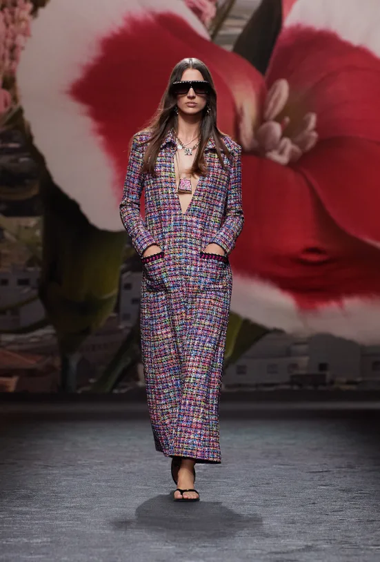
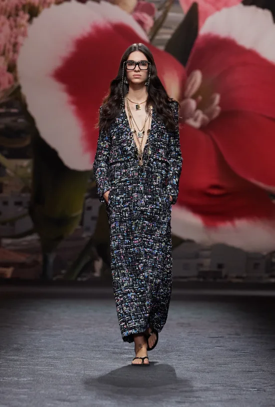

Nuestros Productos
Aquí puedes encontrar información sobre nuestros productos.
 Nuestra Historia
1883 NACIMIENTO DE GABRIELLE CHANEL Gabrielle Chanel nace en Saumur, Francia, el 19 de agosto de 1883, bajo el signo de Leo..
Contacto
¡Contáctanos para obtener más información!